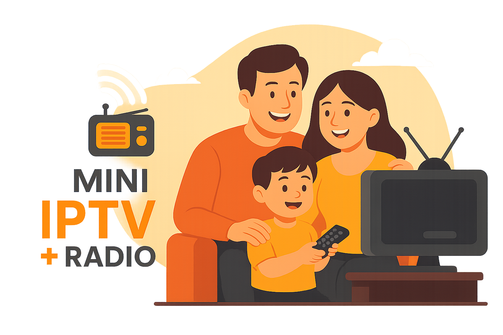

Mini IPTV + Radio
Të gjitha
TV
Radio
Linqe të jashtme
Iframe
Të gjitha grupet
Shqipëri
Kosovë
Turqi
Gjermane
Gjermane - TV Publike
Gjermane - Lajme
Gjermane - Filma
Gjermane - Muzikë
Gjermane - Fëmijë
Gjermane - Sport
Shfaq Të Gjitha
Ringarko
Rezolucioni:
1080p
720p
480p
2160p
Play/Pause
Mute
Fullscreen